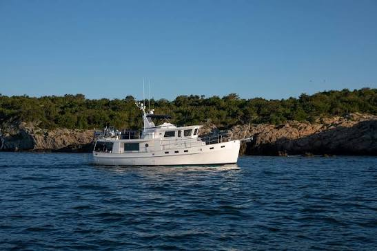

Cape Dory 40 Explorer Explorer
1992–1994
The Cape Dory 40 Explorer is the largest purpose-built cruising power yacht in the documented Cape Dory/Newport Shipyards pleasure-power line. Designed by Clive M. Dent, it combines a modified-V hull and full-length protective keel with twin diesels, lower and flybridge helms, two private staterooms and two heads. The boat can cruise economically at trawler speeds but was also designed for high-teens cruising, so B-Atlas treats it as a fast Downeast/Explorer cruiser rather than a conventional displacement trawler.

- LOA
- 40′ / 12.19 m
- LWL
- 36′ / 10.97 m
- Beam
- 13′ 10″ / 4.22 m
- Draft
- 3′ 9″ / 1.14 m
- Hull behaviour
- Planing
- Fuel
- Diesel
- Propulsion
- Shaft
- Engine configuration
- Twin Inboard
- Boat family
- Downeast
- Construction
- Fiberglass; cored hull sides reported
Best for
- Couples or small families wanting a traditional fast cruiser with two private staterooms
- Extended coastal and Great Lakes cruising
- Owners comfortable with twin-diesel and yacht-scale systems maintenance
Trade-offs
- Twin diesels, generator-class systems and 25,000-pound displacement create yacht-scale maintenance costs
- Nearly 14-foot beam and flybridge height restrict marina, storage and transport options
- Cored hull-side and deck structures require careful moisture assessment around penetrations
- Low production volume limits model-specific comparables and replacement trim sources
Known concerns
- No model-specific concern has been promoted to B-Atlas’s evidence threshold. This does not mean the model has no age-, condition- or hull-specific risks.
Inspection focus
- Confirm hull-specific beam, overall length and production year because published and brokerage figures vary
- Moisture-test cored hull sides, deck and flybridge penetrations
- Inspect twin Caterpillar cooling, exhaust, mounts, shafts, rudders and steering
- Inspect fuel and water tanks, manifolds, hoses and engine-room access
- Test lower and flybridge controls, generator and owner-added electrical systems
- Verify two-stateroom/two-head systems and actual bridge clearance
Continue researching
Related boat models
35.75 ft · Planing
32.83 ft · Planing
30.25 ft · Planing
27.92 ft · Semi-Displacement
27.92 ft · Semi-Displacement
27.92 ft · Semi-Displacement
About this record
B-Atlas preserves uncertainty: missing information remains unknown rather than being treated as a negative. Specifications and guidance describe the model record; individual boats can differ by year, equipment, refit and condition.